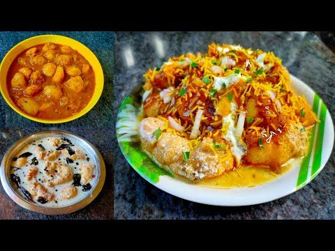
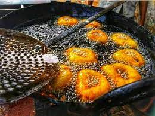
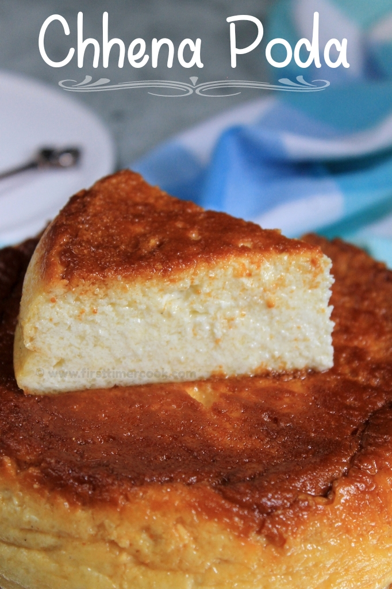
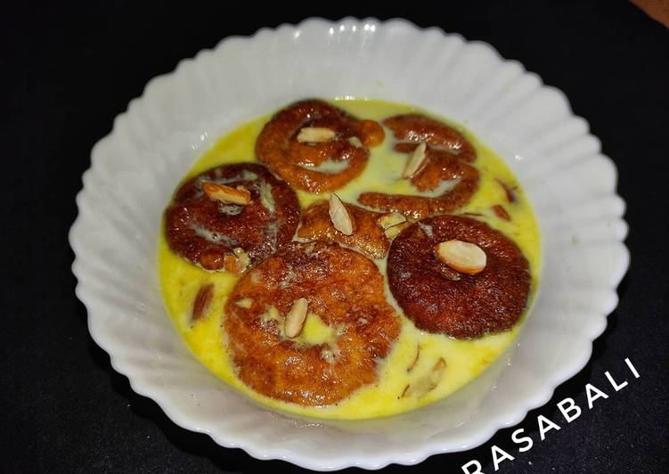
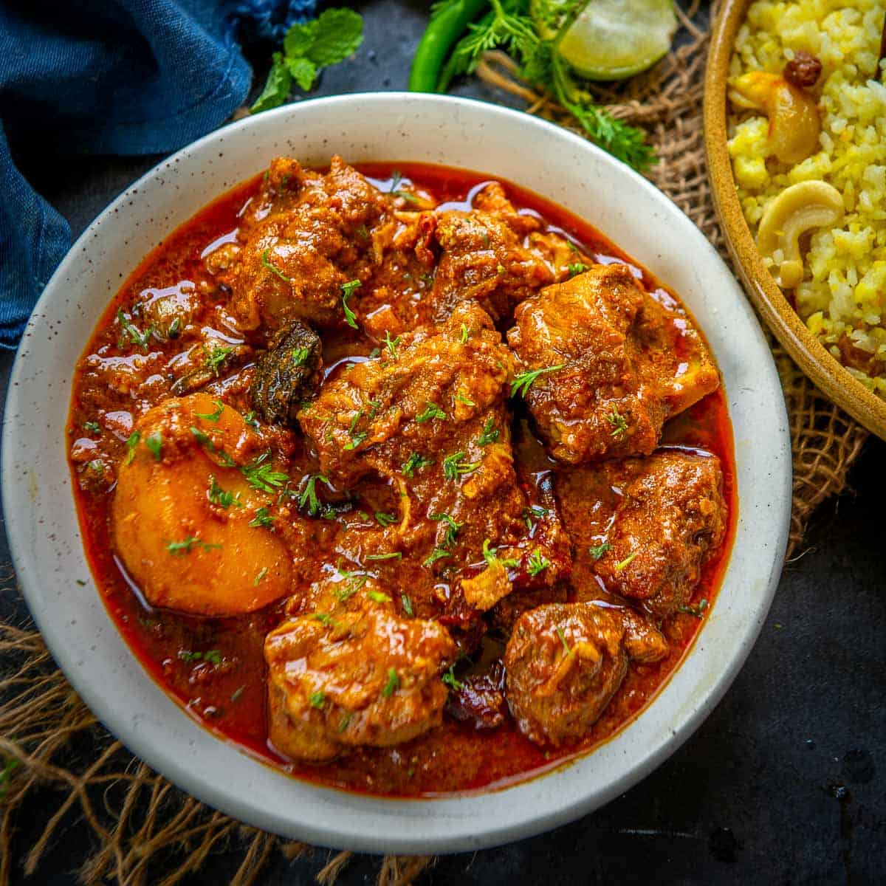

DAHI BARA
ALOODUM


The dish is basically the dahi vada with a spicy sauce (for that extra punch, asks the food vendor to add a bit of pudina chutney). Dahibara Aloodum is best eaten garnished with onions, coriander, chilli powder and cumin powder. Every evening and on weekends, you’ll find chaat vendors selling this item in markets and at popular junctions in the city.
BARA


Wadas are very popular throughout India. In Odisha, though, it is called Bara. The Bara is made using black dal or urad dal and is deep fried till the outer layer turns crisp. The best way to enjoy Bara is to drench it in a bowl of the sweet and spicy chutney that is normally served with the dish. You could also have it with ghugui, a spicy peas curry (much like the ragda) that is another very popular street food in Bhubaneswar.
Chenna poda


If Americans have cinnamon rolls and the Turks have baklava, the people of Bhubaneshwar have chhena podo. Literally roasted cheese curds (cheese curds are called chenna in the local language), it is a mix of sugar, raisins, cashews, ricotta cheese and milk; this dish a favourite after-meal item. While chhena podo is popularly sold at local bakeries in the city, you’ll also find some tea stall vendors serving this dish with tea. Sweet and soft, chhena podo is a must try for anyone with a sweet tooth. Though, if you’re the experimental type, you can also try the spiced variety, which has gained some fame over the past decade.
RASABALI


Rasabali actually originated in the Baladevjew Temple of Kendrapara. It is made using cheese curds (chenna) and milk. The deep fried chenna is crisp, while the milk is sweetened with sugar. Combine the two and you’re left with something truly divine. In fact, many in Bhubaneswar offer this sweet to the Gods. Thus, you’ll often find it as an offering in temples and being sold at food stores around temples. The demand for the sweet goes up at festival time, with thousands of locals thronging sweet shops to purchase or to eat this popular sweet.
So, there you have it. Rasabali concludes our list of the best foods in Bhubaneswar.
CHAKULI PITHA


It is a traditional dish and is very well known as street food. Although it is traditionally prepared on certain occasions, it is now widely popular. It is salty in taste and served with items like mutton/chicken curry. This delicious dish is served with a dal or a lentil soup for vegetarian people.
MUDI MANGSHO


One of the really amazing street foods is mudi mangsho. It is puffed rice that is served along with chicken or mutton curry. The combination might sound odd to the uninitiated, but the locals love it.